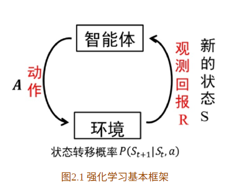
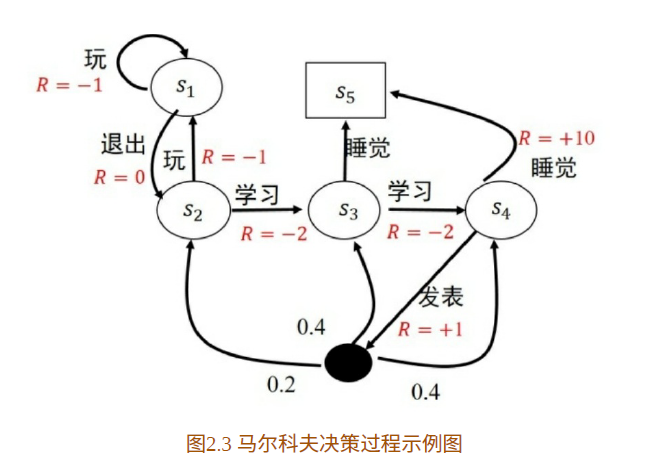
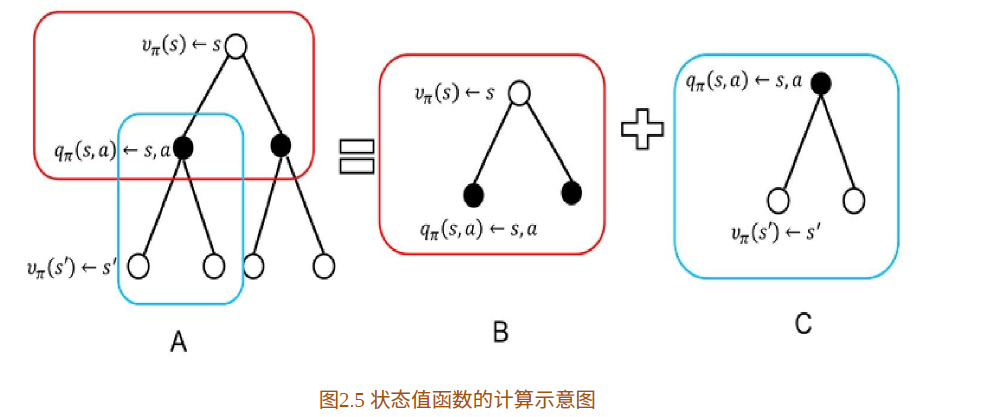
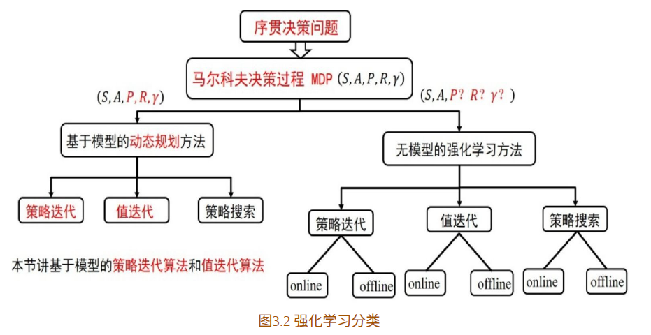
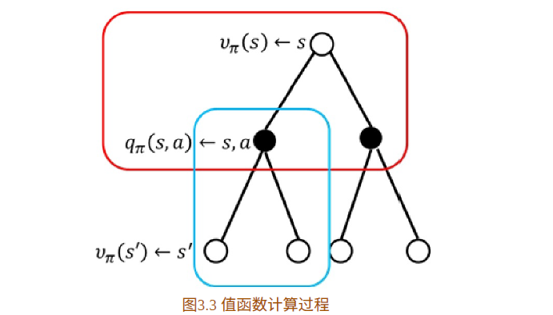
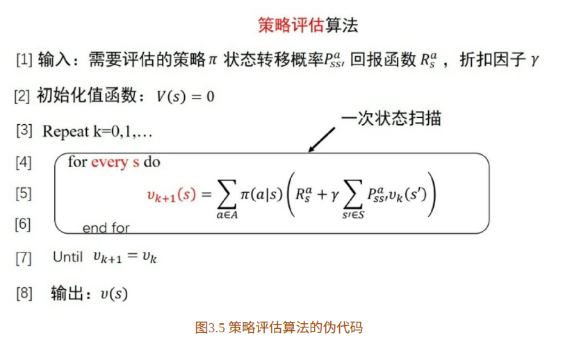
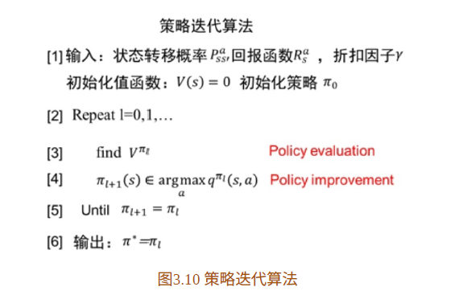
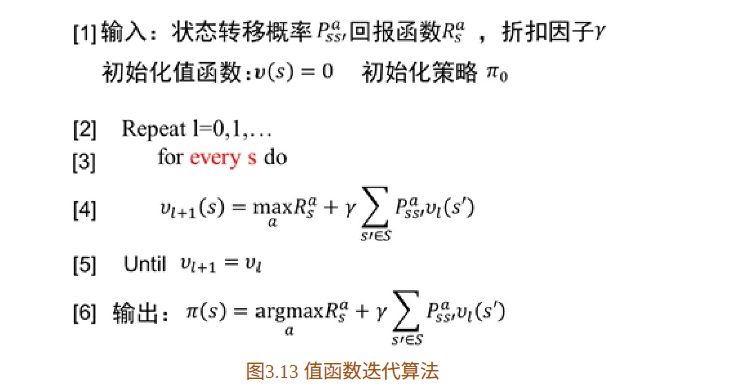

《深入浅出强化学习：原理入门》

马尔科夫决策过程
马尔科夫性：指的是系统的下一个状态\(s_{t+1}\)仅与当前状态\(s_{t}\)有关，而与以前的状态无关。 $$ p(s_{t+1}|s_t)=p(s_{t+1}|s_1,...,s_t) $$ 马尔科夫过程：马尔科夫过程用二元组表示，(S,P)，其中S是有限状态集合，P是状态转移矩阵。
马尔科夫决策决策过程：
\((S,A,P,R,\lambda)\)
(状态集，动作集，状态转移矩阵，回报函数，折扣因子)
马尔科夫决策过程的状态转移矩阵是包含动作的

强化学习的基本概念
给定一个马尔科夫决策过程，寻找最优策略。
策略
策略是状态到动作的映射，常用\(\pi\)表示。它指的是给定状态s时，动作集上的一个分布，即： $$ \pi(a|s)=p(A_t=a|S_t=s) $$ 强化学习一般采用随机策略，原因是随机策略可以将探索耦合到采样过程中。
当给定策略\(\pi\)的时候，状态序列可能为： $$ \begin{aligned} &s_{1} \rightarrow s_{2} \rightarrow s_{3} \rightarrow s_{4} \rightarrow s_{5} \ &s_{1} \rightarrow s_{2} \rightarrow s_{3} \rightarrow s_{5} \ &\vdots \end{aligned} $$ 因为策略与状态转移都具有随机性！所以累积回报： $$ G_{t}=R_{t+1}+\gamma R_{t+2}+\cdots=\sum_{k=0}^{\infty} \gamma^{k} R_{t+k+1} $$ 是随机的，为了评价状态\(s_1\)，需要找到一个确定的值，所以用累积回报的期望来表示。
状态价值函数
给定策略\(\pi\)，累积回报服从一个概率分布，累计汇报在s处的期望值定义为： $$ v_{\pi}(s)=\mathrm{E}{\pi}\left[\sum{k=0}^{\infty} \gamma^{k} R_{t+k+1} \mid S_{t}=s\right] $$ 这就是状态价值函数。
状态行为价值函数
状态行为价值函数，它描述的是在给定状态，给定策略，该动作的价值。

贝尔曼方程
最优状态价值函数
最优状态价值函数为所有策略中，值最大的值函数： $$ v^{*}(s)=\max {\pi} v{\pi}(s) $$
最优状态行为价值函数：
小结

bootstraping 算法

状态价值函数可以改写为以下形式： $$ v_{\pi}(s)=\sum_{a \in A} \pi(a \mid s)\left(R_{s}^{a}+\gamma \sum_{s^{\prime} \in S} P_{s s^{\prime}}^{a}v_{\pi}\left(s^{\prime}\right)\right) $$ 可以看到，价值函数是未知的，这该如何解呢？
这个式子里已知，\(R_{s}^{a}, \pi, P^{a}_{ss'}\) ，未知 \(v_\pi\)

这是一种迭代算法，不断地更新\(v()\)。
通过这个策略评估算法，可以得到某个动作函数的值函数。
在通过这个值函数来改善策略：
如果采用贪婪得方式，那么：


如果只评估一次后就对策略进行改善，则称为值函数迭代算法：

值函数迭代算法：
值函数评估过程中，包括两个迭代循环：
- 外层是为了保证值函数的准确性
- 内层是是对所有状态空间的扫描
这里反映出了dp算法与无模型的强化学习的本质区别：状态转移矩阵P！
dp已知模型，所以可以确切地知道每一步执行后的状态，这个性质使得智能体不需要采取任何行动就能对未来进行评估。